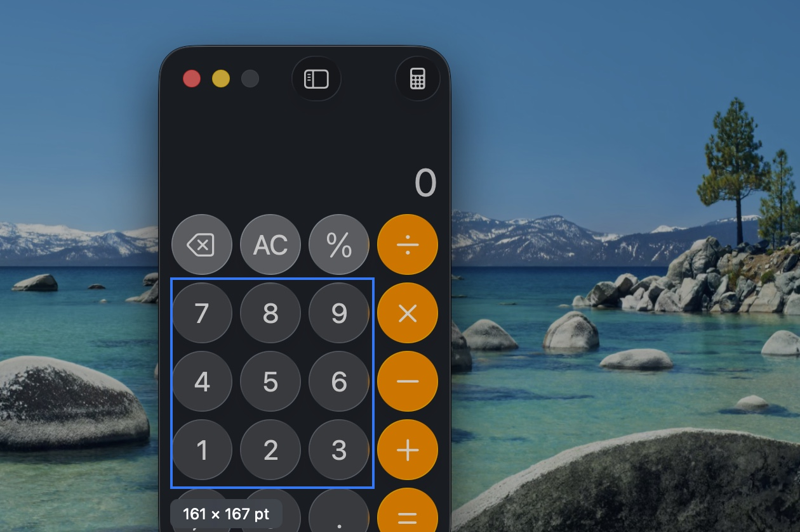
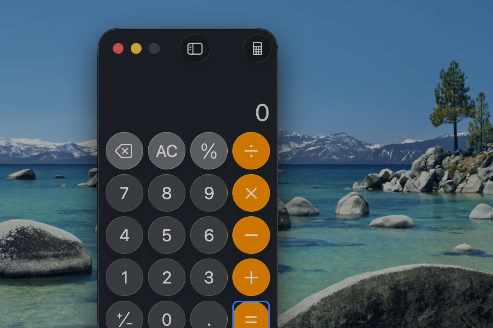
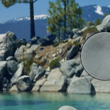
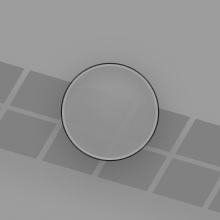
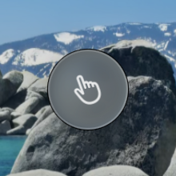
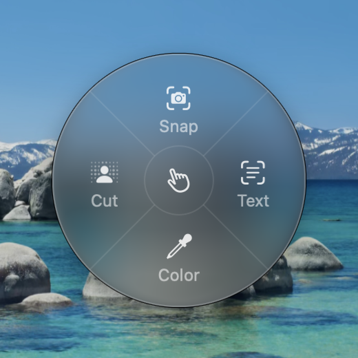
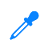
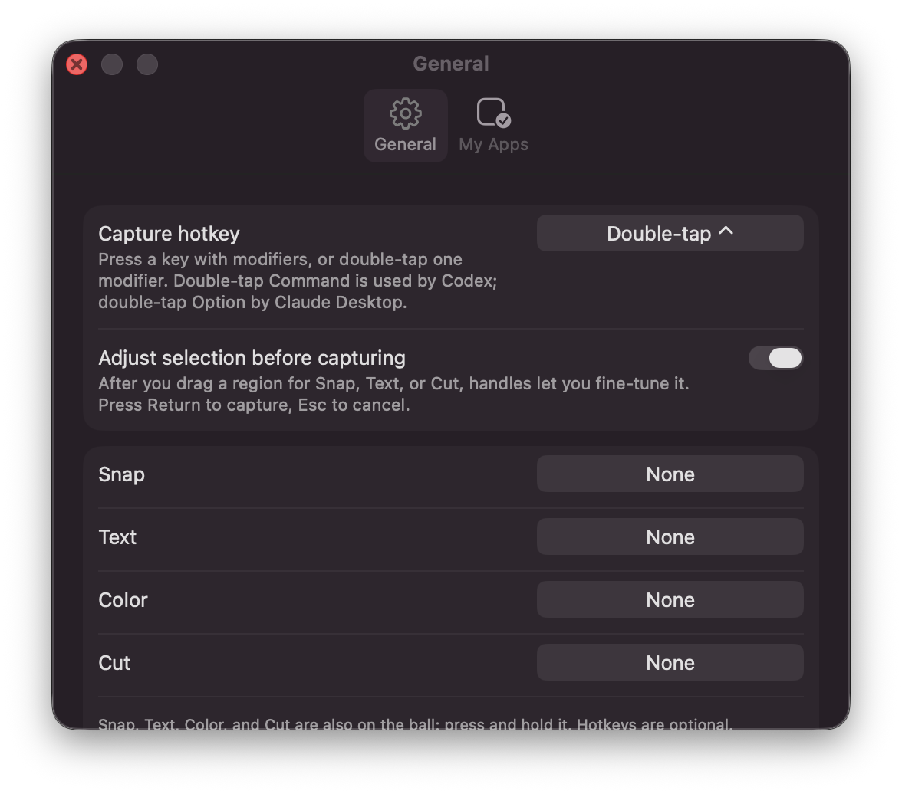

<title>Deixis</title>
<meta name="description" content="Point at one element in any Mac app. Your coding agent gets the element, not a screenshot.">
<link rel="icon" type="image/png" sizes="32x32" href="assets/favicon-32.png">
<link rel="icon" type="image/png" sizes="64x64" href="assets/favicon-64.png">
<link rel="apple-touch-icon" href="assets/apple-touch-icon.png">
<style>
  /* Borrow, don't brand. The page is set in the system face, the same one the overlay label uses. */
  :root {
    --ground: #f5f5f7;
    --surface: #ffffff;
    --ink: #1d1d1f;
    --muted: #6e6e73;
    --hair: #d2d2d7;
    --accent: #0a84ff;
    --accent: color(display-p3 0.04 0.52 1);
    --stage: #0a84ff;
    --stage: color(display-p3 0.04 0.52 1);
    --hud: rgba(255, 255, 255, 0.78);
    --hud-edge: rgba(0, 0, 0, 0.08);
    --glass: rgba(255, 255, 255, 0.22);
    --glass-edge: rgba(255, 255, 255, 0.55);
    --frame: #e9e9ee;
    --frame-chrome: #f7f7fa;
    --dim: rgba(0, 0, 0, 0.2);
    --code-bg: #ffffff;
    --key-bg: #ffffff;
    --shadow: 0 1px 2px rgba(0,0,0,.06), 0 12px 32px rgba(0,0,0,.08);
    --icon-shadow: 0 2px 4px rgba(0,0,0,.10), 0 14px 28px rgba(0,0,0,.16);
    --icon: url("assets/icon-light.png");
    color-scheme: light;
  }
  @media (prefers-color-scheme: dark) {
    :root:not([data-theme="light"]) {
      --ground: #000000;
      --surface: #1c1c1e;
      --ink: #f5f5f7;
      --muted: #a1a1a6;
      --hair: #3a3a3c;
      --accent: #0a84ff;
      --accent: color(display-p3 0.04 0.52 1);
      --stage: #0b6fe0;
      --stage: color(display-p3 0.05 0.44 0.88);
      --hud: rgba(30, 30, 32, 0.78);
      --hud-edge: rgba(255, 255, 255, 0.12);
      --glass: rgba(255, 255, 255, 0.10);
      --glass-edge: rgba(255, 255, 255, 0.28);
      --frame: #2c2c2e;
      --frame-chrome: #3a3a3c;
      --dim: rgba(0, 0, 0, 0.32);
      --code-bg: #1c1c1e;
      --key-bg: #2c2c2e;
      --shadow: 0 1px 2px rgba(0,0,0,.4), 0 12px 32px rgba(0,0,0,.5);
      --icon-shadow: 0 2px 4px rgba(0,0,0,.4), 0 14px 28px rgba(0,0,0,.5);
      --icon: url("assets/icon-dark.png");
      color-scheme: dark;
    }
  }
  :root[data-theme="dark"] {
    --ground: #000000;
    --surface: #1c1c1e;
    --ink: #f5f5f7;
    --muted: #a1a1a6;
    --hair: #3a3a3c;
    --accent: #0a84ff;
    --accent: color(display-p3 0.04 0.52 1);
    --stage: #0b6fe0;
    --stage: color(display-p3 0.05 0.44 0.88);
    --hud: rgba(30, 30, 32, 0.78);
    --hud-edge: rgba(255, 255, 255, 0.12);
    --glass: rgba(255, 255, 255, 0.10);
    --glass-edge: rgba(255, 255, 255, 0.28);
    --frame: #2c2c2e;
    --frame-chrome: #3a3a3c;
    --dim: rgba(0, 0, 0, 0.32);
    --code-bg: #1c1c1e;
    --key-bg: #2c2c2e;
    --shadow: 0 1px 2px rgba(0,0,0,.4), 0 12px 32px rgba(0,0,0,.5);
    --icon-shadow: 0 2px 4px rgba(0,0,0,.4), 0 14px 28px rgba(0,0,0,.5);
    --icon: url("assets/icon-dark.png");
    color-scheme: dark;
  }

  * { box-sizing: border-box; }
  body {
    margin: 0;
    background: var(--ground);
    color: var(--ink);
    font-family: -apple-system, BlinkMacSystemFont, "SF Pro Text", "SF Pro Display", "Helvetica Neue", Helvetica, Arial, sans-serif;
    font-size: 17px;
    line-height: 1.5;
    -webkit-font-smoothing: antialiased;
    padding-inline: 20px;
    padding-block: 0 96px;
  }
  a { color: inherit; }
  code, pre, .mono {
    font-family: ui-monospace, "SF Mono", Menlo, Monaco, Consolas, monospace;
    font-size: 0.86em;
  }
  svg { display: block; }

  .col { max-width: 760px; margin-inline: auto; }
  .wide { max-width: 980px; margin-inline: auto; }

  h1, h2, h3 { margin: 0; text-wrap: balance; letter-spacing: -0.022em; }
  h1 { font-size: clamp(38px, 6.4vw, 60px); line-height: 1.06; font-weight: 600; }
  h2 { font-size: clamp(28px, 4vw, 40px); line-height: 1.12; font-weight: 600; }
  h3 { font-size: 21px; line-height: 1.25; font-weight: 600; letter-spacing: -0.012em; }
  p { margin: 0; }
  .lede { font-size: 21px; line-height: 1.4; color: var(--muted); font-weight: 400; letter-spacing: -0.01em; }
  .muted { color: var(--muted); }
  .small { font-size: 14px; line-height: 1.45; }

  /* nav */
  .nav {
    position: sticky; top: 0; z-index: 10;
    margin-inline: -20px; padding-inline: 20px;
    background: color-mix(in srgb, var(--ground) 78%, transparent);
    -webkit-backdrop-filter: blur(20px) saturate(1.6); backdrop-filter: blur(20px) saturate(1.6);
    border-bottom: 1px solid var(--hair);
  }
  .nav .in { max-width: 980px; margin-inline: auto; height: 52px; display: flex; align-items: center; gap: 28px; }
  .nav .brand { display: flex; align-items: center; gap: 10px; text-decoration: none; font-weight: 600; font-size: 15px; letter-spacing: -0.01em; }
  .nav .brand .mark { width: 24px; height: 24px; border-radius: 6px; background-image: var(--icon); background-size: 100% 100%; box-shadow: 0 1px 2px rgba(0,0,0,.18); }
  .nav .links { display: flex; gap: 22px; margin-inline: auto; }
  .nav .links a { text-decoration: none; font-size: 14px; color: var(--muted); }
  .nav .links a:hover { color: var(--ink); }
  .nav .by { font-size: 14px; color: var(--muted); text-decoration: none; }
  .nav .by:hover { color: var(--ink); }
  .nav .dl { display: inline-block; text-decoration: none; background: var(--accent); color: #fff; font-weight: 600; font-size: 13px; padding: 7px 14px; border-radius: 980px; }
  .nav a:focus-visible { outline: 2px solid var(--accent); outline-offset: 3px; border-radius: 4px; }
  @media (max-width: 720px) { .nav .links, .nav .by { display: none; } .nav .dl { margin-left: auto; } }
  html { scroll-behavior: smooth; scroll-padding-top: 64px; }
  @media (prefers-reduced-motion: reduce) { html { scroll-behavior: auto; } }

  /* hero */
  .hero { text-align: center; padding-block: 88px 48px; display: grid; gap: 20px; justify-items: center; }
  .app-icon {
    width: 128px; height: 128px;
    background-image: var(--icon);
    background-size: 100% 100%;          /* the render is the squircle itself, edge to edge; never crop it */
    background-repeat: no-repeat;
    border-radius: 29px;                 /* 22.37% of the edge, so the shadow follows the squircle */
    box-shadow: var(--icon-shadow);
  }
  .hero .name { font-size: 21px; font-weight: 600; letter-spacing: -0.01em; margin-top: 6px; }
  .hero .name span { color: var(--muted); font-weight: 400; }
  .hero h1 { max-width: 22ch; }
  .hero h1 em { font-style: italic; font-weight: 600; }
  .hero .lede { max-width: 38ch; }
  .cta { display: flex; gap: 10px 22px; align-items: center; flex-wrap: wrap; justify-content: center; margin-top: 4px; }
  .btn {
    display: inline-block; text-decoration: none;
    background: var(--accent); color: #fff;
    padding: 12px 22px; border-radius: 980px; font-weight: 600; font-size: 17px;
  }
  .btn:focus-visible, .link:focus-visible { outline: 2px solid var(--accent); outline-offset: 3px; }
  .link { text-decoration: none; color: var(--accent); font-weight: 500; }
  .link:hover { text-decoration: underline; }
  .fine { font-size: 13px; color: var(--muted); }
  .fine span + span::before { content: "·"; margin-inline: 8px; }

  /* the overlay, drawn from the app's own tokens */
  .stage {
    position: relative;
    aspect-ratio: 16 / 10;
    max-width: 100%;
    border-radius: 18px;
    background: var(--stage);
    box-shadow: var(--shadow);
    overflow: hidden;
    margin-top: 36px;
  }
  .stage .app {
    position: absolute; inset: 9% 12% 0 12%;
    background: var(--surface);
    border-radius: 14px 14px 0 0;
    box-shadow: 0 8px 30px rgba(0,0,0,.18);
    overflow: hidden;
  }
  .stage .chrome { height: 34px; background: var(--frame-chrome); border-bottom: 1px solid var(--hair); display: flex; align-items: center; gap: 7px; padding-inline: 12px; }
  .stage .chrome i { width: 11px; height: 11px; border-radius: 50%; background: var(--hair); display: block; }
  .stage .body { padding: 5.5% 6%; display: grid; gap: 14px; }
  .stage .line { height: 12px; border-radius: 6px; background: var(--hair); opacity: .8; }
  .stage .line.w1 { width: 62%; } .stage .line.w2 { width: 40%; } .stage .line.w3 { width: 74%; }
  .stage .cardrow { display: grid; grid-template-columns: 1fr 1fr; gap: 12px; margin-top: 8px; }
  .stage .card { height: 64px; border-radius: 10px; background: var(--frame); }
  .stage .dim { position: absolute; inset: 0; background: var(--dim); }
  .stage .pill {
    position: absolute; left: 33%; bottom: 17%; width: 34%; height: 8.5%;
    border-radius: 980px; background: var(--accent); opacity: .92;
    display: flex; align-items: center; justify-content: center; color: #fff; font-weight: 600; font-size: clamp(11px, 1.6vw, 15px);
  }
  .stage .highlight {
    position: absolute; left: calc(33% - 4px); bottom: calc(17% - 4px); width: calc(34% + 8px); height: calc(8.5% + 8px);
    border-radius: 980px; border: 2px solid var(--accent);
    box-shadow: 0 0 0 1px rgba(255,255,255,.25) inset;
  }
  .stage .label {
    position: absolute; left: 50%; bottom: 8%; transform: translateX(-50%);
    background: var(--hud); border: 1px solid var(--hud-edge);
    -webkit-backdrop-filter: blur(20px) saturate(1.4); backdrop-filter: blur(20px) saturate(1.4);
    border-radius: 6px; padding: 4px 8px; white-space: nowrap;
    font-size: clamp(10px, 1.5vw, 12px); color: var(--ink);
  }
  .stage .label code { font-size: 0.95em; }
  .stage .cursor {
    position: absolute; left: 59%; bottom: 17.5%; width: 3.6%; min-width: 18px; height: auto;
    filter: drop-shadow(0 1px 2px rgba(0,0,0,.5));
  }
  /* the ball, docked at the right edge as it rests */
  .stage .ball {
    position: absolute; right: -2.2%; top: 44%; width: 4.4%; min-width: 26px; aspect-ratio: 1; border-radius: 50%;
    background: var(--glass); border: 1px solid var(--glass-edge);
    -webkit-backdrop-filter: blur(8px); backdrop-filter: blur(8px);
    box-shadow: 0 1px 6px rgba(0,0,0,.18);
  }
  figcaption { margin-top: 14px; font-size: 14px; color: var(--muted); text-align: center; }

  /* sections */
  section { padding-block: 80px 0; }
  .sect-head { display: grid; gap: 10px; margin-bottom: 32px; max-width: 640px; }
  .sect-head .lede { font-size: 19px; }

  /* three steps, each with the thing you see */
  .steps { display: grid; grid-template-columns: repeat(3, 1fr); gap: 24px; }
  .step { display: grid; gap: 12px; align-content: start; }
  .step .vis {
    position: relative; height: 108px; border-radius: 14px; background: var(--surface); box-shadow: 0 0 0 1px var(--hair);
    display: grid; place-items: center; padding: 16px; overflow: hidden;
  }
  .step .vis .n { position: absolute; top: 10px; left: 14px; font-size: 13px; color: var(--muted); font-variant-numeric: tabular-nums; }
  .step .text { display: grid; gap: 4px; }
  .step h3 { font-size: 19px; }
  .step p { font-size: 15px; color: var(--muted); }
  kbd {
    font-family: inherit; font-size: 13px; font-weight: 600; color: var(--ink);
    border: 1px solid var(--hair); border-bottom-width: 2px; border-radius: 6px; padding: 1px 7px; background: var(--key-bg);
  }
  .keys { display: flex; align-items: center; gap: 8px; }
  .keys kbd { font-size: 22px; padding: 6px 14px; border-radius: 9px; }
  .keys .plus { color: var(--muted); font-size: 13px; }
  .hud {
    background: var(--hud); border: 1px solid var(--hud-edge); border-radius: 8px; padding: 8px 12px;
    font-size: 13px; color: var(--ink); white-space: nowrap; display: flex; align-items: center; gap: 10px;
    box-shadow: 0 4px 14px rgba(0,0,0,.10);
  }
  .hud .caret { width: 1.5px; height: 15px; background: var(--accent); }
  .hud kbd { font-size: 11px; padding: 0 5px; }
  .term {
    width: 100%; background: #1c1c1e; color: #f5f5f7; border-radius: 8px; padding: 10px 12px;
    font-family: ui-monospace, "SF Mono", Menlo, monospace; font-size: 11.5px; line-height: 1.5; text-align: left; white-space: nowrap; overflow: hidden;
  }
  .term .p { color: #a1a1a6; }
  .term .k { color: #6ab0ff; }

  /* the overlay, up close: four real frames */
  .frames { display: grid; grid-template-columns: 1fr 1fr; gap: 18px; }
  .frame { display: grid; gap: 10px; align-content: start; }
  .frame .pic { aspect-ratio: 3 / 2; border-radius: 14px; overflow: hidden; box-shadow: var(--shadow); }
  .frame .pic img { width: 100%; height: 100%; object-fit: cover; display: block; }
  .frame h3 { font-size: 17px; }
  .frame p { font-size: 14px; color: var(--muted); }
  .frame code { font-size: 0.9em; }

  /* the ball: four real states */
  .states { display: grid; grid-template-columns: repeat(4, 1fr); gap: 16px; }
  .state { display: grid; gap: 10px; align-content: start; }
  .state .pic { aspect-ratio: 1; border-radius: 16px; overflow: hidden; box-shadow: 0 0 0 1px var(--hair); }
  .state .pic img { width: 100%; height: 100%; object-fit: cover; display: block; }
  .state h3 { font-size: 17px; }
  .state p { font-size: 14px; color: var(--muted); }

  /* payload with what each line is for */
  .payload-wrap { display: grid; gap: 24px; }
  pre.payload {
    margin: 0; background: var(--code-bg); border: 1px solid var(--hair); border-radius: 12px;
    padding: 18px 20px; overflow-x: auto; line-height: 1.6; font-size: 13px;
  }
  pre.payload .h { color: var(--muted); }
  pre.payload .k { color: var(--accent); }
  .notes { display: grid; grid-template-columns: 1fr 1fr; gap: 14px 32px; }
  .note { display: grid; gap: 2px; font-size: 15px; padding-left: 14px; border-left: 2px solid var(--hair); }
  .note b { font-weight: 600; }
  .note span { color: var(--muted); }

  /* the fallback ladder: what the label reads at each rung */
  .ladder { display: grid; gap: 10px; }
  .rung { display: grid; grid-template-columns: 26px auto 1fr; gap: 18px; align-items: center; padding: 14px 16px; border-radius: 12px; background: var(--surface); box-shadow: 0 0 0 1px var(--hair); }
  .rung .n { color: var(--muted); font-variant-numeric: tabular-nums; font-size: 13px; }
  .rung .chip { justify-self: start; background: var(--hud); border: 1px solid var(--hud-edge); border-radius: 6px; padding: 3px 8px; font-size: 12px; white-space: nowrap; }
  .rung .chip code { font-size: 0.95em; }
  .rung .chip.dash { border-style: dashed; color: var(--muted); }
  .rung p { color: var(--muted); font-size: 14px; }
  .rung b { color: var(--ink); font-weight: 600; }

  .actions { display: grid; grid-template-columns: repeat(4, 1fr); gap: 14px; }
  .action { display: grid; gap: 8px; padding: 18px 16px; background: var(--surface); border-radius: 16px; box-shadow: 0 0 0 1px var(--hair); align-content: start; }
  .action .glyph { width: 30px; height: 30px; }
  .action h3 { font-size: 19px; }
  .action p { font-size: 14px; color: var(--muted); }
  .action .keeps { font-size: 12px; color: var(--muted); margin-top: 2px; }
  .rulebox { margin-top: 18px; font-size: 15px; color: var(--muted); }

  .split { display: grid; grid-template-columns: 1.15fr 1fr; gap: 40px; align-items: center; }
  .ba {
    border-radius: 14px; overflow: hidden; background: var(--surface); box-shadow: var(--shadow), 0 0 0 1px var(--hair);
    font-size: 12px; color: var(--muted);
  }
  .ba .chrome { height: 30px; background: var(--frame-chrome); border-bottom: 1px solid var(--hair); display: grid; grid-template-columns: 1fr auto 1fr; align-items: center; padding-inline: 10px; }
  .ba .chrome .dots { display: flex; gap: 6px; }
  .ba .chrome .dots i { width: 10px; height: 10px; border-radius: 50%; background: var(--hair); display: block; }
  .ba .chrome .title { font-weight: 600; color: var(--muted); font-size: 12px; }
  .ba .memo { padding: 12px 14px 10px; color: var(--ink); font-size: 14px; }
  .ba .panes { position: relative; display: grid; grid-template-columns: 1fr 1fr; gap: 2px; background: var(--hair); margin-inline: 14px; border-radius: 8px; overflow: hidden; }
  .ba .pane { position: relative; aspect-ratio: 45 / 26; background: var(--frame); display: grid; place-items: center; padding: 10%; }
  .ba .pane .tag { position: absolute; top: 8px; left: 10px; font-size: 11px; color: var(--muted); }
  .ba .pane .btn-old { width: 78%; height: 30%; background: var(--accent); border-radius: 6px; opacity: .85; }
  .ba .pane .btn-new { width: 78%; height: 30%; background: var(--accent); border-radius: 980px; }
  .ba .divider { position: absolute; top: 0; bottom: 0; left: 50%; width: 2px; background: var(--surface); transform: translateX(-1px); }
  .ba .knob { position: absolute; top: 50%; left: 50%; width: 22px; height: 22px; transform: translate(-50%, -50%); border-radius: 50%; background: var(--surface); box-shadow: 0 1px 4px rgba(0,0,0,.25); display: grid; place-items: center; }
  .ba .knob::before { content: ""; width: 8px; height: 8px; border-left: 1.5px solid var(--muted); border-right: 1.5px solid var(--muted); }
  .ba .facts { display: grid; gap: 6px; padding: 12px 14px 14px; font-family: ui-monospace, "SF Mono", Menlo, monospace; font-size: 11.5px; }
  .ba .facts .stat { color: var(--ink); }
  .ba .facts .stat b { font-weight: 600; }
  .ba .facts .plus { color: #30a46c; } .ba .facts .minus { color: #e5484d; }
  .ba .facts .file { display: flex; justify-content: space-between; gap: 12px; }

  .shot { display: grid; justify-items: center; }
  .shot img { width: 100%; max-width: 720px; height: auto; display: block; }

  .grid2 { display: grid; grid-template-columns: repeat(2, 1fr); gap: 24px 40px; }
  .grid2 .item { display: grid; gap: 4px; align-content: start; }
  .grid2 .item h3 { font-size: 17px; }
  .grid2 .item p { color: var(--muted); font-size: 15px; }

  table { border-collapse: collapse; width: 100%; font-size: 15px; }
  th, td { text-align: left; padding: 12px 16px 12px 0; border-bottom: 1px solid var(--hair); vertical-align: top; }
  td:first-child { white-space: nowrap; font-weight: 600; }
  th { font-weight: 600; font-size: 13px; color: var(--muted); }
  .tablewrap { overflow-x: auto; }

  ul.plain { margin: 0; padding-left: 1.1em; display: grid; gap: 10px; color: var(--muted); font-size: 15px; }
  ul.plain b { color: var(--ink); font-weight: 600; }

  footer { margin-top: 96px; padding-top: 32px; border-top: 1px solid var(--hair); display: grid; gap: 18px; font-size: 14px; color: var(--muted); }
  footer .row { display: flex; gap: 20px; flex-wrap: wrap; align-items: center; }
  footer .word { max-width: 60ch; }

  @media (max-width: 720px) {
    .hero { padding-block: 56px 36px; }
    .app-icon { width: 96px; height: 96px; border-radius: 21.5px; }
    .grid2, .notes { grid-template-columns: 1fr; }
    .steps { grid-template-columns: 1fr; gap: 16px; }
    .step { grid-template-columns: 224px 1fr; align-items: center; gap: 20px; }
    .step .vis { height: 96px; padding: 12px; }
    .step .hud { font-size: 12px; padding: 6px 10px; gap: 8px; }
    .step .term { font-size: 10.5px; padding: 8px 10px; }
    .actions, .states { grid-template-columns: 1fr 1fr; }
    .frames { grid-template-columns: 1fr; }
    .split { grid-template-columns: 1fr; }
    .rung { grid-template-columns: 26px 1fr; }
    .rung p { grid-column: 2; }
  }
  @media (max-width: 440px) {
    .step { grid-template-columns: 1fr; }
    .actions { grid-template-columns: 1fr; }
  }
  @media (prefers-reduced-motion: no-preference) {
    .stage .highlight { animation: settle 220ms ease-out both; }
    .stage .label { animation: reveal 200ms ease-out 120ms both; }
    @keyframes settle { from { transform: scale(1.04); opacity: 0; } to { transform: none; opacity: 1; } }
    @keyframes reveal { from { opacity: 0; transform: translate(-50%, 4px); } to { opacity: 1; transform: translate(-50%, 0); } }
  }
</style>

<nav class="nav" aria-label="Site">
  <div class="in">
    <a class="brand" href="#top"><span class="mark" aria-hidden="true"></span>Deixis</a>
    <div class="links">
      <a href="#how">How it works</a>
      <a href="#point">Point</a>
      <a href="#ball">The ball</a>
      <a href="#payload">Payload</a>
      <a href="#actions">Actions</a>
      <a href="#privacy">Privacy</a>
    </div>
    <a class="by" href="https://www.malikzhang.com">Built by Malik</a>
    <a class="dl" href="https://github.com/Malik1942/deixis/releases/latest">Download</a>
  </div>
</nav>
<main id="top">
  <header class="hero col">
    <div class="app-icon" role="img" aria-label="Deixis app icon"></div>
    <p class="name">Deixis <span>for Mac</span></p>
    <h1>Agents don't understand <em>this</em>. Deixis&nbsp;does.</h1>
    <p class="lede">Point at one element in any app. Your coding agent gets the element, not a screenshot.</p>
    <div class="cta">
      <a class="btn" href="https://github.com/Malik1942/deixis/releases/latest">Download for Mac</a>
      <a class="link" href="https://github.com/Malik1942/deixis">View on GitHub</a>
    </div>
    <p class="fine"><span>macOS 15 or later</span><span>Apple silicon and Intel</span><span>Free</span><span>No account</span></p>
  </header>

  <figure class="wide" style="margin-block: 0;">
    <!-- Hero demo. When the recording exists, replace this drawn stage with:
         <video autoplay muted loop playsinline poster="assets/demo-poster.png"><source src="assets/demo.mp4" type="video/mp4"></video> -->
    <div class="stage" aria-label="The Deixis overlay: a highlighted button with its role and identifier in a label beneath, and the ball resting at the screen edge">
      <div class="app">
        <div class="chrome"><i></i><i></i><i></i></div>
        <div class="body">
          <div class="line w1"></div>
          <div class="line w2"></div>
          <div class="cardrow"><div class="card"></div><div class="card"></div></div>
          <div class="line w3"></div>
        </div>
      </div>
      <div class="dim"></div>
      <div class="pill">Capture</div>
      <div class="highlight"></div>
      
      <div class="label">button · <code>id=captureButton</code></div>
      <div class="ball" aria-hidden="true"></div>
    </div>
    <figcaption>Hover shows the element and its identifier. Nothing is written until Enter.</figcaption>
  </figure>

  <section class="col" id="how">
    <div class="sect-head">
      <h2>Three seconds, start to paste</h2>
    </div>
    <div class="steps">
      <div class="step">
        <div class="vis"><span class="n">1</span><div class="keys"><kbd>⌃</kbd><span class="plus">twice</span></div></div>
        <div class="text"><h3>Point</h3><p>Double-tap Control, or click the ball. Hover, then click the element.</p></div>
      </div>
      <div class="step">
        <div class="vis"><span class="n">2</span><div class="hud">make this rounded<span class="caret"></span><kbd>↩</kbd></div></div>
        <div class="text"><h3>Note</h3><p>Type what should change. Enter captures. Esc cancels, nothing written.</p></div>
      </div>
      <div class="step">
        <div class="vis"><span class="n">3</span><div class="term"><span class="k">## Deixis capture (fix)</span><br>Image: ~/Pictures/Deixis/…<br>button · id=captureButton</div></div>
        <div class="text"><h3>Paste</h3><p>Into Claude Code, Cursor, or Codex. The image path comes first.</p></div>
      </div>
    </div>
  </section>

  <section class="wide" id="point">
    <div class="sect-head col" style="margin-inline: auto;">
      <h2>Point, up close</h2>
      <p class="lede">The overlay over Calculator. Every frame is a real capture.</p>
    </div>
    <div class="frames">
      <div class="frame">
        <div class="pic"></div>
        <h3>Hover</h3><p>The element under the cursor and its identifier: <code>button · Eight</code>.</p>
      </div>
      <div class="frame">
        <div class="pic"></div>
        <h3>Option</h3><p>Steps to the parent: <code>group · CalculatorKeypadView</code>. Again for the next level.</p>
      </div>
      <div class="frame">
        <div class="pic"></div>
        <h3>Drag</h3><p>A frame, with every element inside it listed for the agent.</p>
      </div>
      <div class="frame">
        <div class="pic"></div>
        <h3>Note</h3><p>Click, say what should change, Return. Esc cancels, nothing written.</p>
      </div>
    </div>
  </section>

  <section class="col" id="ball">
    <div class="sect-head">
      <h2>The ball</h2>
      <p class="lede">A glass disc that lives at the edge of the screen and stays out of the way until you reach for it.</p>
    </div>
    <div class="states">
      <div class="state">
        <div class="pic"></div>
        <h3>Docked</h3><p>After two seconds without use it tucks into the nearest edge, part of it showing.</p>
      </div>
      <div class="state">
        <div class="pic"></div>
        <h3>Awake</h3><p>Move toward it and it comes back out. Drag it anywhere.</p>
      </div>
      <div class="state">
        <div class="pic"></div>
        <h3>Ready</h3><p>Under the cursor the hand appears. Click to point.</p>
      </div>
      <div class="state">
        <div class="pic"></div>
        <h3>The ring</h3><p>Press and hold for Snap, Text, Color, and Cut. Release on one.</p>
      </div>
    </div>
  </section>

  <section class="col" id="payload">
    <div class="sect-head">
      <h2>What your agent receives</h2>
      <p class="lede">Enough to find the right file on the first try.</p>
    </div>
    <div class="payload-wrap">
<pre class="payload"><span class="h">## Deixis capture (fix)</span>
<span class="k">Image:</span> ~/Pictures/Deixis/deixis-simulator-20260913-153012-k7q2.png
<span class="k">App:</span> Simulator (com.example.myapp) · Window: iPhone 17 Pro
<span class="k">Captured:</span> 2026-09-13 15:30 · Image region: 450×130 pt @2x

<span class="h">### Target element</span>
button · id=captureButton
<span class="k">Frame:</span> x=43 y=894 w=370 h=50
<span class="k">Path:</span> application > window > group > group > button#captureButton

<span class="h">### Note</span>
make this rounded, match the other pills</pre>
      <div class="notes">
        <div class="note"><b>Image first</b><span>Terminal agents get only the text on paste. The path leads, so the agent can open the PNG.</span></div>
        <div class="note"><b>Fix or reference</b><span>Your own apps are inferred: the Simulator, anything built on this Mac, anything signed with your Team ID.</span></div>
        <div class="note"><b>Identifier and path</b><span>The accessibility identifier is what the agent greps for. The path says where in the tree it sits.</span></div>
        <div class="note"><b>On disk too</b><span>A PNG and a JSON sidecar in Pictures, tagged in Finder, validating against a published schema.</span></div>
      </div>
    </div>
  </section>

  <section class="col">
    <div class="sect-head">
      <h2>When there is no element</h2>
      <p class="lede">Deixis steps down a ladder and says which rung it reached.</p>
    </div>
    <div class="ladder">
      <div class="rung"><span class="n">1</span><span class="chip">button · <code>id=captureButton</code></span><p><b>Element</b> with a declared identifier. The best case.</p></div>
      <div class="rung"><span class="n">2</span><span class="chip">button · "Save changes"</span><p><b>Label only.</b> The nearest labeled neighbors are named too.</p></div>
      <div class="rung"><span class="n">3</span><span class="chip">frame · 450×130 · 6 elements</span><p><b>Drawn frame.</b> Drag on the overlay; everything inside is listed.</p></div>
      <div class="rung"><span class="n">4</span><span class="chip">text · "Save changes" "Cancel"</span><p><b>Text and neighbors.</b> Words in the image are recognized.</p></div>
      <div class="rung"><span class="n">5</span><span class="chip dash">element: null</span><p><b>Image.</b> The payload says so, and still carries your note.</p></div>
    </div>
  </section>

  <section class="col" id="actions">
    <div class="sect-head">
      <h2>Four more, on the same gesture</h2>
      <p class="lede">Press and hold the ball for the ring.</p>
    </div>
    <div class="actions">
      <div class="action">
        
        <h3>Snap</h3><p>A region or a window, as a PNG.</p><p class="keeps">Keeps a file</p>
      </div>
      <div class="action">
        
        <h3>Text</h3><p>Recognized lines, to the clipboard.</p><p class="keeps">Keeps nothing</p>
      </div>
      <div class="action">
        
        <h3>Color</h3><p>Hex, rgb, hsl, or SwiftUI. sRGB or P3.</p><p class="keeps">Keeps nothing</p>
      </div>
      <div class="action">
        
        <h3>Cut</h3><p>The subject on a transparent background.</p><p class="keeps">Keeps a file</p>
      </div>
    </div>
  </section>

  <section class="col">
    <div class="split">
      <div class="ba" role="img" aria-label="The Before and After window: the note on top, two captures of the same button side by side with a slide divider, square-cornered before and pill-shaped after, and the git diff stat beneath">
        <div class="chrome"><div class="dots"><i></i><i></i><i></i></div><span class="title">Before &amp; After</span><span></span></div>
        <div class="memo">make this rounded, match the other pills</div>
        <div class="panes">
          <div class="pane"><span class="tag">Before</span><div class="btn-old"></div></div>
          <div class="pane"><span class="tag">After</span><div class="btn-new"></div></div>
          <div class="divider"></div><div class="knob"></div>
        </div>
        <div class="facts">
          <div class="stat"><b>2 files changed</b> · <span class="plus">+12</span> <span class="minus">−4</span> · a3f9c1e → working tree</div>
          <div class="file"><span>Sources/Capture/CaptureButton.swift</span><span><span class="plus">+9</span> <span class="minus">−3</span></span></div>
          <div class="file"><span>Sources/DesignSystem/Pill.swift</span><span><span class="plus">+3</span> <span class="minus">−1</span></span></div>
        </div>
      </div>
      <div class="sect-head" style="margin: 0;">
        <h2>See what changed</h2>
        <p class="lede">After the agent's edit, choose Capture after. Deixis finds the same element in the running app, captures it again, and shows both with the diff beneath.</p>
      </div>
    </div>
  </section>

  <section class="col">
    <div class="sect-head">
      <h2>Settings that look like Settings</h2>
      <p class="lede">The one place Deixis is a window. Every default works on first launch.</p>
    </div>
    <figure class="shot" style="margin: 0;">
      
    </figure>
  </section>

  <section class="col" id="privacy">
    <div class="sect-head">
      <h2>Private by design</h2>
    </div>
    <div class="grid2">
      <div class="item">
        <h3>Two permissions, both explained</h3><p>Accessibility reads what is under your cursor. Screen Recording captures the pixels. There is no third prompt.</p>
      </div>
      <div class="item">
        <h3>Nothing leaves the machine</h3><p>No network, no telemetry, no accounts. Captures stay in your Pictures folder and go to the Trash after 30 days unless pinned.</p>
      </div>
      <div class="item">
        <h3>Signed and notarized</h3><p>Every build is signed with a Developer ID and notarized by Apple. A dmg, not the App Store.</p>
      </div>
      <div class="item">
        <h3>Quiet</h3><p>No Dock icon. Idle memory under 30 MB. Nothing pulses, bounces, or waits for you.</p>
      </div>
    </div>
  </section>

  <section class="col">
    <div class="sect-head">
      <h2>Works where you paste</h2>
      <p class="lede">The payload is plain Markdown, so any agent takes it on paste. Whether it also opens the image, as of version 0.4:</p>
    </div>
    <div class="tablewrap">
      <table>
        <thead><tr><th>Agent</th><th>Image</th><th>Status</th></tr></thead>
        <tbody>
          <tr><td>Claude Code</td><td>Reads the PNG from the path</td><td>Expected to work, check pending</td></tr>
          <tr><td>Cursor</td><td>Reads the path</td><td>Untested</td></tr>
          <tr><td>Codex CLI</td><td>Views the image at the path</td><td>Untested</td></tr>
          <tr><td>Gemini CLI, Antigravity</td><td>Untested</td><td>Untested</td></tr>
        </tbody>
      </table>
    </div>
  </section>

  <section class="col">
    <div class="sect-head">
      <h2>Known limitations</h2>
    </div>
    <ul class="plain">
      <li><b>Element quality follows the app's accessibility.</b> SwiftUI, AppKit, and the iOS Simulator work well. Electron and Chromium apps build their tree on first contact, so the first hover can take half a second.</li>
      <li><b>Custom-drawn UIs expose little.</b> Figma, games, and canvases usually reach the bottom of the ladder. The payload says so.</li>
      <li><b>Hover picks the smallest real control.</b> Press Option to step to the parent.</li>
    </ul>
  </section>

  <footer class="col">
    <div class="row">
      <a class="btn" href="https://github.com/Malik1942/deixis/releases/latest">Download for Mac</a>
      <a class="link" href="https://github.com/Malik1942/deixis">GitHub</a>
      <span>Version 0.4.0</span>
      <a class="link" href="https://www.malikzhang.com" style="margin-left: auto;">Built by Malik</a>
    </div>
    <p class="word">Deixis is the linguistics term for words like <em>this</em>, <em>here</em>, and <em>that one</em>, which only mean something when someone is pointing.</p>
  </footer>
</main>
